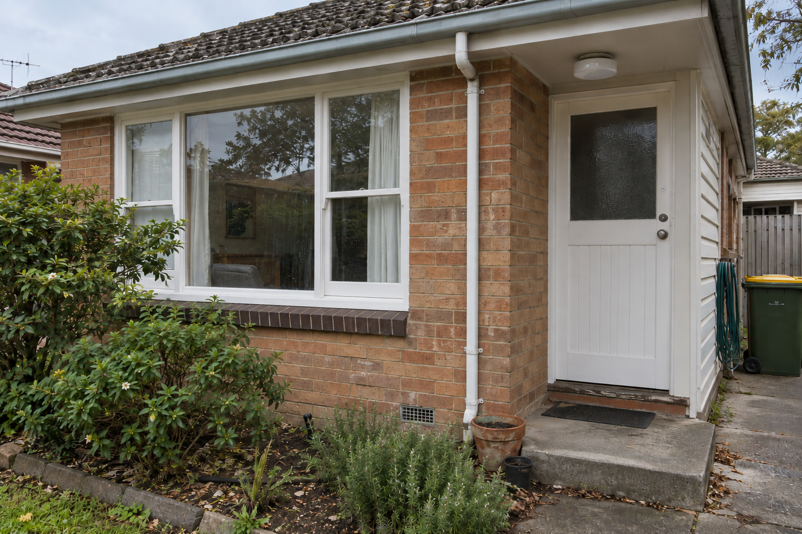
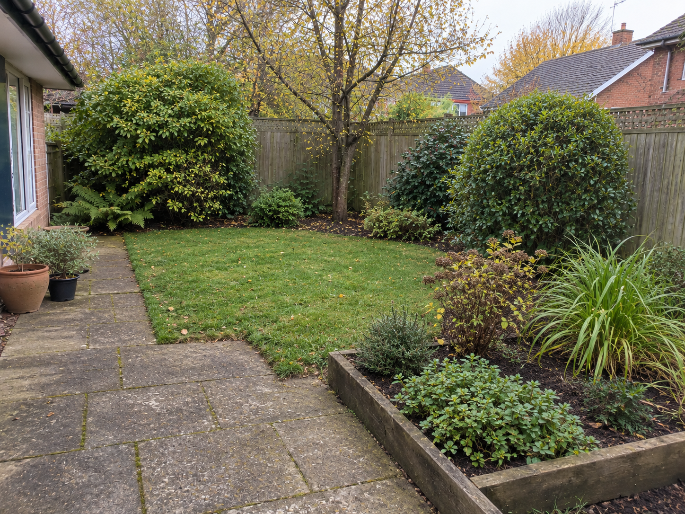
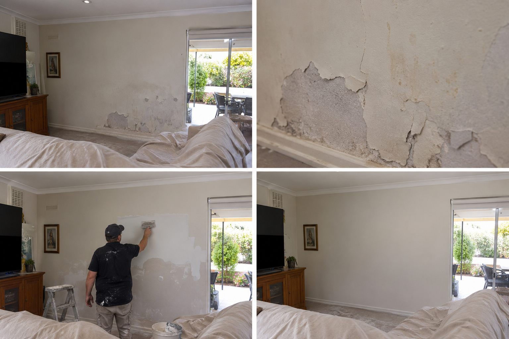
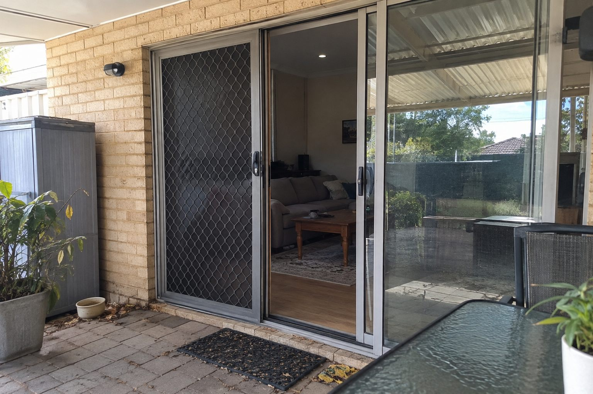
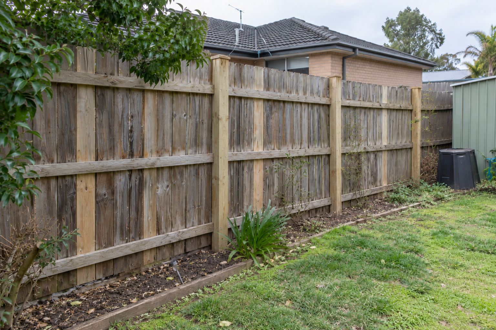
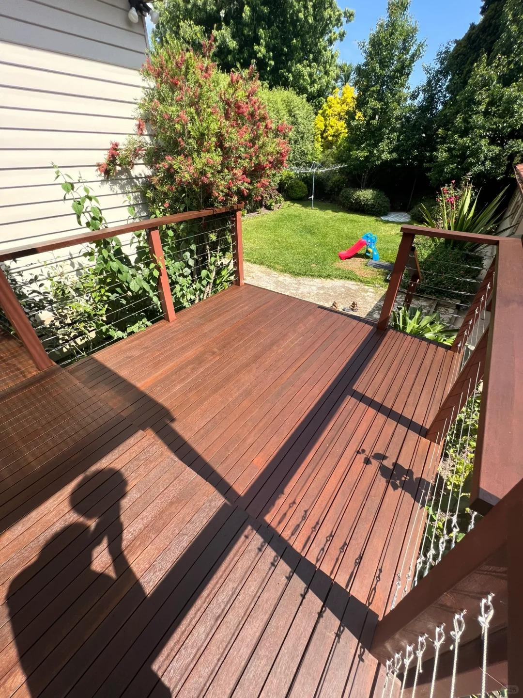

Popular service
Managed property services across the Perth metropolitan area
One request.
One team accountable.
Tell Ellis what needs attention and we will help move your property request forward.
Popular starting points
Find the work, not the jargon
Choose a common service or search in your own words, then share your suburb or postcode with the request.
Popular service
Carpentry
Explore servicePopular service
Door repairs & installation
Explore servicePopular service
Fly screen repairs
Explore servicePopular service
Window repairs
Explore servicePopular service
Minor tiling
Explore servicePopular service
House painting
Explore servicePopular service
Garden clean-up
Explore serviceHow the managed model works
A clear line from request to local delivery
Describe the property task
Search by the work you recognise and include a suburb or postcode.
Align scope and provider
Ellis maps a clear service pathway for your property request.
Keep one accountable service team
Our team remains the coordinating point whether delivery is by Ellis or a reviewed partner.
For property decision-makers
Keep access, scope and approvals in one conversation
Property managers can provide the authorised contact, access process and approval pathway for each address. Ellis coordinates the request from first contact through to the agreed next step.
Read the property manager guide →Perth service-area pathways
Start local, coordinate consistently
Browse Perth service areas and choose the service you need.
Recent projects
Property maintenance in context
Explore real photo sequences that show the initial condition, work in progress and completed exterior details.
Roof & gutter maintenance
Before, during and completed
Explore the full project gallery for the before image, work in progress, completed exterior and finished drainage detail.
View project
Exterior timber window & door repair
Visible deterioration through to repair
See the full sequence of exterior timber repair around a window and entry door.
View project
Bathroom tile & shower area repair
From worn shower details to a refreshed bathroom
See the full sequence of bathroom repair work around the shower wall, floor tiles and finishes.
View project
Garden clean-up
From overgrown beds to a tidy outdoor area
See the full photo sequence of garden clearing, pruning and the completed outdoor presentation.
View project
Interior wall repair & painting
From visible wall damage to a refreshed room
See the full photo sequence of wall repair preparation and the completed interior presentation.
View project
Sliding door flyscreen repair
From torn mesh to a usable screen door
See the photo sequence of damaged flyscreen mesh, repair work and the completed sliding door.
View project
Timber fence repair
From deteriorated posts to a stable fence line
See the photo sequence of fence deterioration, repair work and the completed fence line.
View project
Decking refinishing & maintenance
Examples from preparation through to finished timber decks
Browse decking surface preparation, coating application and completed outdoor deck examples.
View examples
Guides & Advice
Make the next conversation clearer
5 min read
How to Find the Right Repairer for a Home Maintenance Job
A practical way to define the job, identify the right skill set and confirm who will attend before work begins.
5 min read
When Does Home Maintenance Need a Licensed Trade?
Understand why licensing depends on the task and location, and what to confirm before regulated work starts.
5 min read
What to Prepare Before Asking for a Home Repair Quote
Give a service provider the details needed to understand the job and explain price, scope and inspection requirements.
Start with one request
Tell us what needs attention
Share the task and location to start your service request.
Perth office
Visit our Perth office
140 St Georges TerracePerth WA 6000
Planning to visit? Please contact our team first. You can use the map below to find our Perth office.
Open in Google Maps